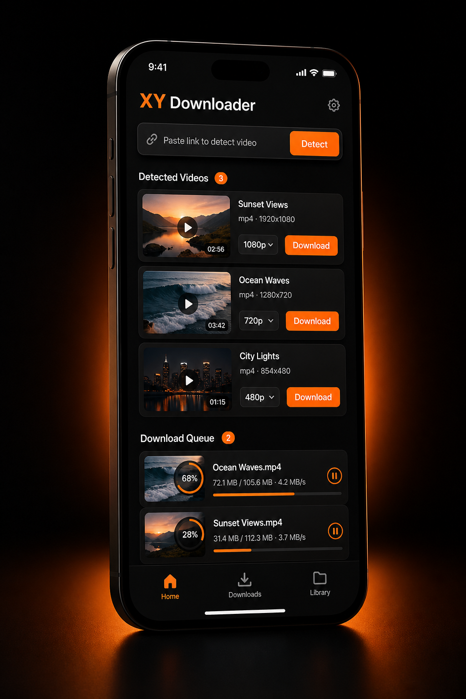

Auto video detection
Scans active web pages and lists detected video resources without extra setup.
Smart web video downloader
XY Downloader finds playable videos while you browse, organizes the available sources, and gives you a simple way to save the clips you need.

Built for fast capture, clear choices, and fewer clicks. Open a page, let XY Downloader detect video streams, then save the one that fits your needs.
What it does
Scans active web pages and lists detected video resources without extra setup.
Review available files, formats, and source entries before saving.
Start downloads quickly from a clean interface built for repeated use.
Simple workflow
Open a webpage that contains a video.
XY Downloader detects available video sources automatically.
Choose the detected item and save it to your device.
Ready when you are
XY Downloader keeps the experience direct: detect video, choose source, start download.